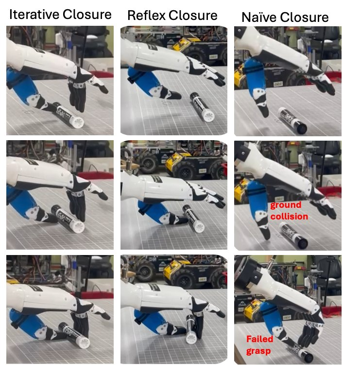
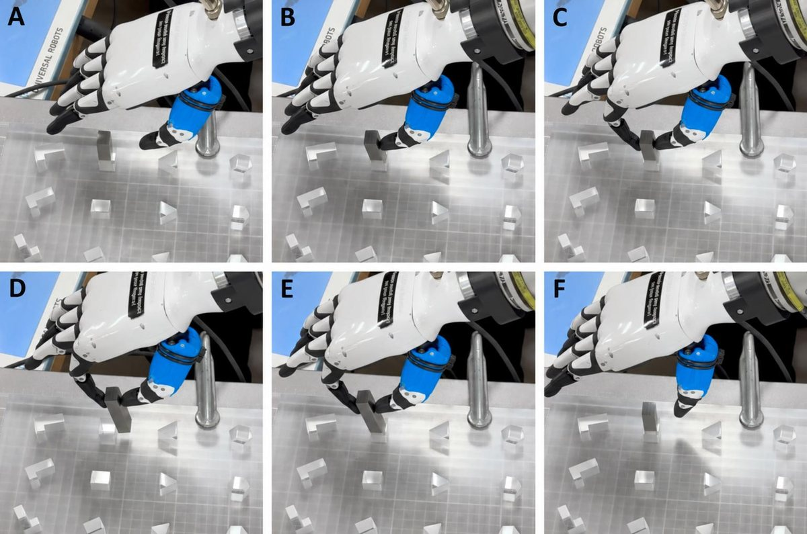

Research assistant, Correll Lab, University of Colorado Boulder
I work on dexterous robot hands for everyday manipulation: grasp planning, contact-aware control, and force sensing.
Applying to PhD programs for Fall 2027
About
I joined Nikolaus Correll's lab at the University of Colorado Boulder in March 2025, graduated with a B.S. in Computer Science that December, and have worked in the lab full-time since.
My work started with a practical problem. The Inspire RH56, a humanoid hand that costs about $8,000, drives twelve joints with six motors and reports only raw, uncalibrated force readings. I characterized the hand, modeled its coupled fingers, and built the planner and controller that took its grasp success from 48% to 87%. I am now interested in how a hand's mechanism, sensing, and control together decide which everyday tasks it can do well.
Research
First-author paper · under review
Grasp Planning and Contact Control for the Inspire RH56 Hand Family
The coupled linkages move each fingertip along a fixed arc (A). Holding the same pinch from 110 mm down to 0 mm takes up to 49° of wrist rotation and 23 mm of translation (B).
Treated like a parallel-jaw gripper, this hand fails about half its grasps. I calibrated its finger forces against a force gauge, designed a controller that approaches fast and makes contact slowly, and modeled the linkages in MuJoCo to map an object's width to finger closure and wrist pose. Two planned strategies use that map: iterative closure follows the wrist path while the fingers close, and reflex closure moves to the final pose with the fingers open, then closes when the thumb touches the object.
Results on the real hand
Planned with the hand modelBaseline
All 15 objects150 grasps per strategy
Iterative closure82.0%
Reflex closure86.7%
Parallel-jaw48.0%
050100%
Delicate objectsraspberry, strawberry, paper cup, egg, M6 nut · 50 grasps each
Iterative closure94%
Reflex closure80%
Parallel-jaw20%
050100%
Simulation predicted reflex closure would reach more of these objects (90% vs. 70%). On the real hand, fast contact made objects slip, and the order reversed.
With real RGB-D perception7 objects × 10 starting poses
Reflex closure48.6%
GraspGen-X18.6%
050100%
GraspGen-X is a learned grasp generator that supports this hand. Grasps rejected before execution count as failures.
Peg-in-hole release20 insertions each
Thumb force65%
Wrist F/T sensor10%
050100%
Release fires at 10 times the sensor's noise: about 0.12 N at the thumb and 1.1 N at the wrist.
Show these results as a table
Test
Method
Success
Count
All 15 objects
Iterative closure
82.0%
123 / 150
All 15 objects
Reflex closure
86.7%
130 / 150
All 15 objects
Parallel-jaw (baseline)
48.0%
72 / 150
Delicate objects
Iterative closure
94%
47 / 50
Delicate objects
Reflex closure
80%
40 / 50
Delicate objects
Parallel-jaw (baseline)
20%
10 / 50
Real RGB-D perception
Reflex closure
48.6%
34 / 70
Real RGB-D perception
GraspGen-X (baseline)
18.6%
13 / 70
Peg-in-hole release
Thumb force
65%
13 / 20
Peg-in-hole release
Wrist F/T sensor (baseline)
10%
2 / 20

Iterative (left), reflex (middle), and naive closure (right) on the real hand. Naive closure hits the table or misses.

Peg-in-hole insertion. A spike and then a drop in the thumb's force reading trigger release.
My role. First author. I built the MuJoCo model, planner, controller, and experiment tools, ran the hardware studies, and am the lead developer of rh56_controller, the open-source package released with the paper.
Contributing author · preprint
GOLEM: Modular Humanoid Autonomy Towards Electric Vehicle Battery Disassembly
Max Conway, William Xie, Allen Devaraj, Yutong Zhang, Niraj Pudasaini, Mateo Feit, Adam Abid, Zachary Allen, Chen Liu, Xuan Tan, Jensen Lavering, Jason Chen, Lyle Antieau, Anthony Von Pischke, Alessandro Roncone, Zachary Sunberg, Nikolaus Correll
An open-source, modular autonomy system that lets a Unitree H1-2 humanoid work on a real Hyundai Ioniq 5 battery pack. I integrated an existing FAISS-based retrieval pipeline into its spatial-memory module and ran experiments for the study.
Other projects
Supermarket object retrieval with TIAGo
2025
Three-person team · Webots simulation
Built occupancy-grid mapping, path planning, and control for autonomous navigation, and integrated grasp-pose generation, inverse kinematics, and motion planning to move items from shelf to basket.
Sand Dunes Rover
2024
Colorado Space Grant Consortium · Seven-person team
Led software development: Arduino motor-control and encoder firmware, an extended Kalman filter fusing IMU and encoder data, and PID-based waypoint tracking.